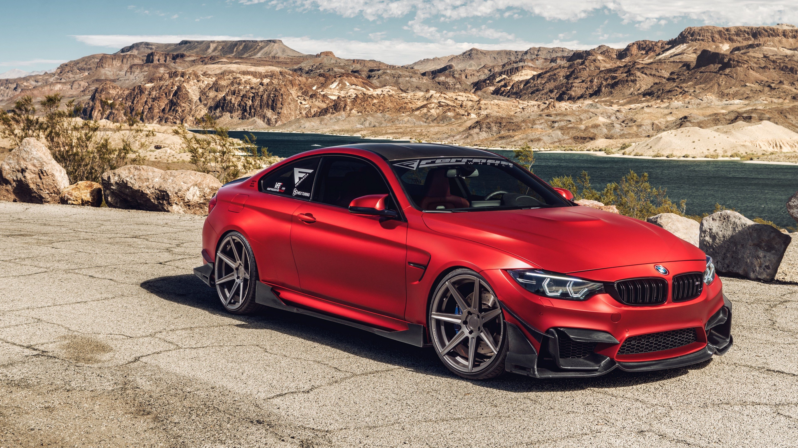

The sporting M4 Coupe and M4 Convertible provide greater performance over
the standard 4 Series with an uprated turbocharged I6. The M4’s 3.0L M TwinPower Turbo
straight six-cylinder engine can rev up to 7,600 rpm and provides a maximum of 425 hp and
406 lb.-ft. of torque. Zero to 100 km/h time in the coupe is rated at 4.3 seconds.
Both models of M4 come with BMW’s 7-speed M double-clutch transmission. As you’d expect
in an M-badged car, the M4 gets Active M differential and Adaptive M suspension for
superior traction and performance in the corners.
The 2018 M4 comes standard with a Harman Kardon surround-sound audio system with 16 speakers, HD Radio, and satellite radio.
New for 2018, the entire 4 Series gets an updated infotainment menu layout. The new layout
features six “tile-style” (think smartphone apps) control pads distributed between two digital
pages. The tiles contain things like entertainment, navigation, and telephone access, and you can
arrange them to suit your preferences. Wireless smartphone charging and a Wi-Fi hot spot are also
available for 2018. The M4 features an inductive charging tray, which is located in the center armrest.
The Wi-Fi hot spot provides internet access for up to 10 devices. Apple CarPlay is available for an
additional $300. Buyers can also add the Executive package ($2,100) to either M4 model. This package
adds side- and top-view cameras, adaptive full LED headlights, automatic high beams, park assist, a
head-up display, and local speed limit information.

Critics really like the M4’s powertrain options, and BMW plans to keep them around a while longer, so the 2018 model will have the same specs as the 2017 model.
The M4 coupe and convertible are both powered by a twin-turbocharged 3.0-liter inline-six engine, which yields 425 horsepower and up to 406 pound-feet of torque.
BMW says the turbochargers are lag-free, for impressive acceleration.Transmission options are a standard six-speed manual and an optional seven-speed dual-clutch
automatic with paddle shifters.
Rear-wheel drive is standard in the M4. The powertrain also includes an automatic stop-start function and a track-ready cooling system.
The M4 coupe is rated for a zero to 60 mph acceleration time of 4.1 seconds with the manual transmission, 3.9 seconds with the automatic transmission, and 3.8 seconds with the
Competition Package. The M4 convertible is just slightly slower. In standard configuration, it can go from zero to 60 in 4.2 seconds. The Competition Package shaves 0.1 second off.